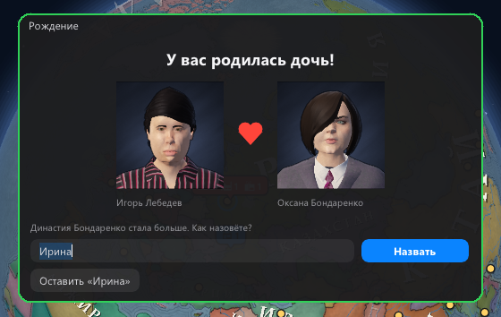
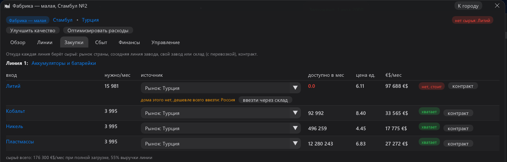
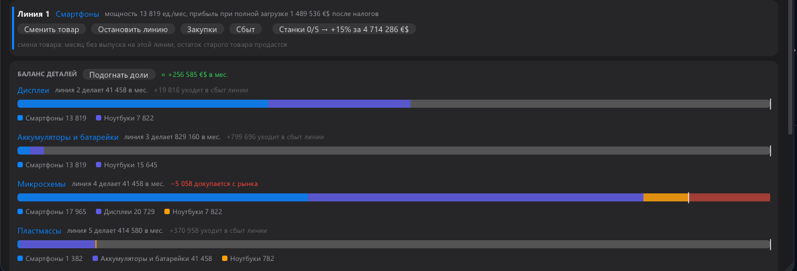
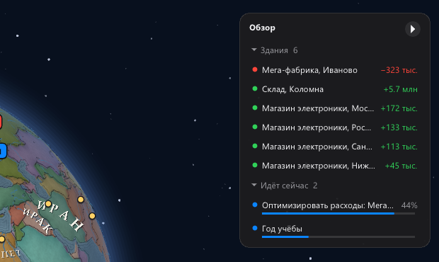

Игрок на itch дошёл до миллиардера и подробно написал, что мешало. Этот патч — его список, пункт за пунктом.
Спасибо: такой отзыв стоит недели плейтестов. А пока патч собирался, написали ещё двое — их находки тоже здесь.
Деньги владельца
✚ «Себе каждый месяц». В окне «Корпорация» ползунок: доля прибыли месяца сама уходит в ваш кошелёк, законно —
только из заработанного, не из кредитов, и не когда фирма в долгах. Миллиардер больше не носит себе миллионы руками.
✚ Потолок зарплаты гендиректора растёт вместе с корпорацией, а советник подскажет, если кошелёк пуст, а фирма богата.
Заводы, склады, контракты
✚ Деталь со своей линии. Если одна линия завода делает деталь для другой, вторая берёт её внутри, даже если
раньше брала со склада, и управляющий на автопилоте больше не отправляет её на рынок страны.
✚ Зачем склад — одной цифрой. В карточке склада «Выгода в месяц»: сколько ваши магазины и заводы сберегли
против закупки на рынке, минус содержание. Советник предлагает склад, только когда ввоз из-за границы правда дешевле.
✚ Контракты без надоедливых окон. Окно с предложением — только первые два раза, дальше лента и телефон.
И галочка «Подписывать выгодные самому»: контракт с ценой хотя бы на 10% выше себестоимости подписывается сразу.
Семья и персонаж
✚ Имена детей. Родился ребёнок — игра встаёт на паузу и показывает окно с портретами родителей: «Как назовёте?». Переименовать можно и потом.
✚ Свой персонаж. На старте выбираете детство и взрослую жизнь, возраст и черты характера.
✚ Как устроена семья. Наведите на супруга, детей, родню, династию: короткое объяснение, как это работает.

Люди за цифрами
✚ Пять качеств вместо дюжины: Управление, Интеллект, Харизма, Влияние, Интриги, и отдельно Известность.
Навыки стали перками в ветках, очки перков дают год учёбы и опыт.
✚ Интриги: найти компромат и держать человека на крючке, спровоцировать, похитить чертежи. Провал может вас
выдать, а жертва запомнит. Те, кто вас ненавидит, затевают своё.
✚ Интеллект: проекты на здание — «Улучшить качество» и «Оптимизировать расходы», и «Проверить слухи»:
верная наводка на акцию, которую биржа недооценила, или чужая тайна.
Склад и ввоз — по вашим письмам
✚ Почему склад «не работает». Если завод берёт со склада товар, которого там нет, окно закупок так и скажет — и
подскажет, что лежит вместо него: «на складе нет меди, там медная руда, сначала её переработает медеплавильный завод».
✚ Ввоз в один клик. Нет сырья на рынке вашей страны (литий, кобальт…) — окно закупок называет страну, где
дешевле всего, и кнопка «ввезти через склад» сама настроит ваш склад на ввоз. Если ввоз закрыт войной или санкциями, тоже скажет.

Производство
✚ Баланс деталей. Завод делает детали сам себе? Полоса на каждую деталь показывает, кто её ест и сколько:
смартфоны, дисплеи, ноутбуки — и красным, чего не хватает. Больше не нужно складывать в уме.
✚ «Подогнать доли» выставит линиям деталей ровно столько, сколько берут ваши линии, и заранее покажет, сколько это даст в месяц.
✚ Нехватка с соседней линии докупается на рынке. Линия деталей не успевает — недостающее покупается, а не стоит.
✚ Новые станки. Каждую линию можно улучшать отдельно, 5 этапов по +15% мощности; станки ставят месяц.

Обзор справа
✚ Стрелочка в правом верхнем углу (или клавиша O) открывает обзор: ваши здания с прибылью и проблемами, что идёт
сейчас (улучшения, задания, учёба), кто под вас копает, какие контракты скоро кончатся. Клик ведёт на место.

Прокачка
✚ Вкладка «Прокачка» в окне персонажа: карточка на каждое качество, его две ветки, три ступени у перка.
✚ Качества растут от своих дел: Управление — от зданий, которые вы ведёте, Интеллект — от НИИ и проектов,
Харизма — от магазинов, брендов и сделок, Влияние — от постов, групп и лоббизма, Интриги — от заданий.
✚ Качества делают то, что обещают: Управление даёт больше зданий под личным управлением, Влияние смягчает
прокуратуру, Интеллект ускоряет ваши НИИ. Маркетолог, Харизма и Управление теперь правда приводят покупателей в магазин.
✚ Баланс: управляющий магазина стоит дешевле и поднимает его оборот; Агроном и Горный инженер вдвое скромнее;
продать миру можно только технологию из своих НИИ — проекты и краденые чертежи остаются ноу-хау ваших заводов.
Сохранения 0.14 грузятся в 0.15.
От автора
Мы добавили прокачку. Вкладка пока экспериментальная: я ещё думаю над перками, талантами и качествами. Возможно,
следующий патч будет промежуточным — в нём я закончу работу с пешками.
Я понимаю, что интерфейс ужасен. На самом деле я делал его под себя и понимаю, что это не всем подходит. Я попробую
поработать над ним глубже и сделать его понятнее. Если кто-то из тех, кто скачает и поиграет, захочет повлиять на игру —
я не против. Если хотите предложить, каким должен быть интерфейс и какие нужны вкладки, пишите мне в соцсети или на почту:
контакты я добавлю в описание на главной странице.
Спасибо за поддержку и за то, что потратили время на мою игру.